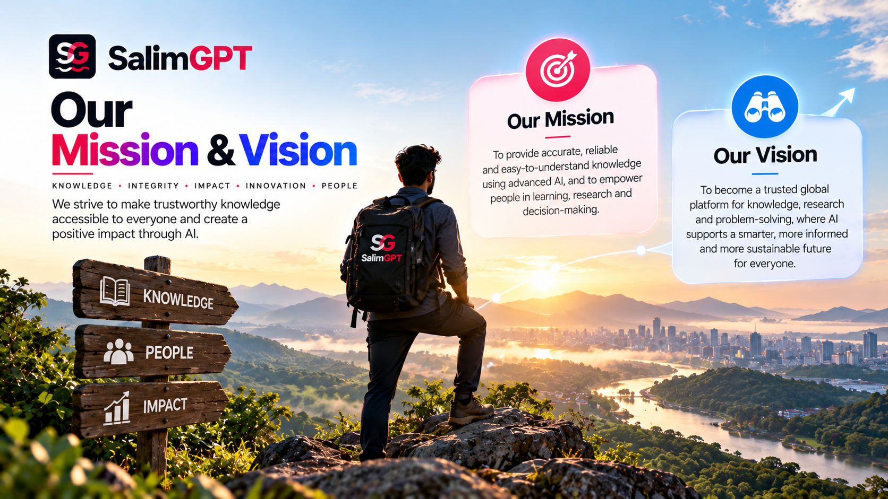
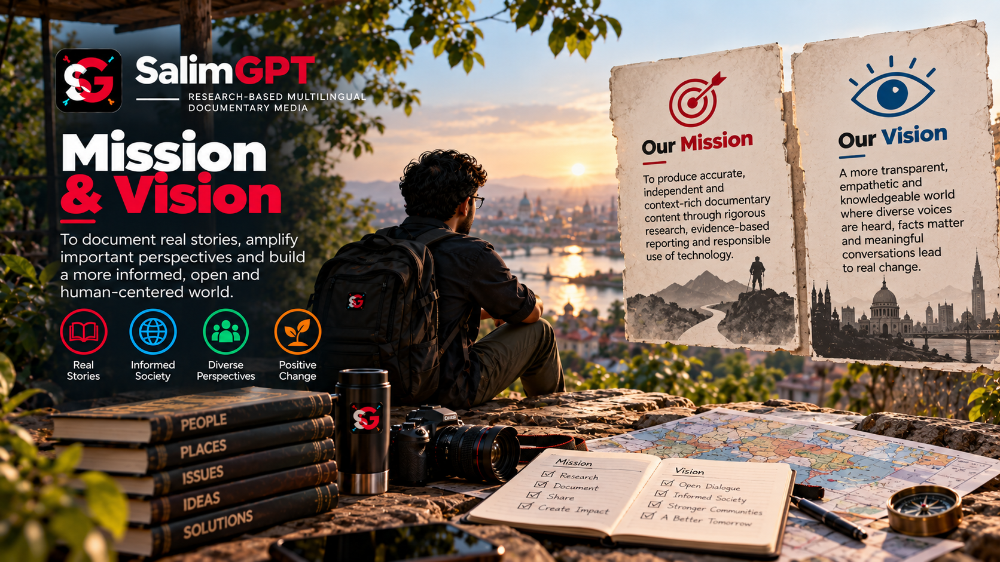

Research Before Production
Documentary development should begin with questions, evidence, sources and context rather than starting from a predetermined production output.
PURPOSE & DIRECTION
SalimGPT is being developed as a research-based, multilingual documentary media platform where modern technology can expand production capability without replacing human editorial responsibility.
Research-Based Documentary Media — Human-Led. AI-Assisted. Editorially Reviewed. Multilingual.

OUR MISSION
SalimGPT’s mission is to develop documentary media that helps audiences explore subjects through research, evidence, context and structured storytelling.
Technology, including artificial intelligence, may assist selected parts of the workflow. Human editorial responsibility remains central to research direction, source assessment, fact-checking, creative decisions, review and final approval.
OUR VISION
The long-term vision is to build SalimGPT as a global documentary media identity that can publish and connect research-based work across multiple language editions.
The platform is designed to remain open to broad, specific, local, interdisciplinary, emerging and unusual subjects that can be responsibly researched and developed into documentary work.
As production technology changes, SalimGPT can adopt useful tools while preserving a clear distinction between technological assistance and human editorial authority.

GUIDING PRINCIPLES
SalimGPT’s direction is organized around principles that separate editorial responsibility from the tools used to support production.
Documentary development should begin with questions, evidence, sources and context rather than starting from a predetermined production output.
People remain responsible for assessing information, making editorial decisions, reviewing material and approving publication.
AI can support research, drafting, visual development, localization and other production tasks without becoming the final editorial authority.
Dedicated language editions can make documentary work accessible to audiences within their own language environments.
SalimGPT aims to explain relevant aspects of its research, editorial review, AI-assisted production and correction processes.
Research methods, production processes and publishing systems can evolve as the platform learns, expands and adopts better tools.
BROAD DOCUMENTARY SCOPE
SalimGPT uses broad topic gateways such as History, Society, Science, Technology, Human Civilization, Mystery, Investigations and Current Affairs.
These areas are starting points rather than rigid editorial boundaries. Documentary subjects may also be local, niche, interdisciplinary, emerging or highly specific when they can be meaningfully researched.
Explore TopicsLONG-TERM DIRECTION
Growth is not limited to publishing more documentaries. It also involves improving the systems that support research, review, discovery, language access and audience understanding.
Strengthen research workflows, source evaluation and evidence handling as documentary production expands.
Expand documentary access through additional language editions as the platform develops.
Support documentary storytelling through formats and media approaches appropriate to the subject and publishing environment.
Adopt useful technologies where they improve production without transferring editorial responsibility away from people.
Continue developing transparent standards for human review, corrections, ownership, evidence and editorial independence.
Improve the ways audiences can find documentaries by topic, series, collection, language and other useful discovery paths.
EDITORIAL RESPONSIBILITY
AI tools can become more capable, but greater technical capability does not remove the need for editorial judgment. SalimGPT’s direction keeps source verification, fact-checking, framing, creative direction, review and final approval under human responsibility.
MULTILINGUAL DIRECTION
SalimGPT Global acts as the central brand, discovery, trust and language gateway. Dedicated editions provide separate environments for documentary publishing in different languages.
Bengali, English and Hindi editions are available. Additional languages can be introduced as the platform expands.
THE DIRECTION IN ONE STATEMENT
SalimGPT’s mission and vision are connected by that principle. The tools, formats and languages can evolve; the responsibility for what is researched, interpreted, reviewed and published remains with people.
CONTINUE READING
Read the central introduction to the documentary media brand.
Explore the background and development of the project.
Understand the meaning and reasoning behind the name.
Learn about founder and director Mohammad Salim.
Explore the role of research within documentary development.
See how human review remains part of editorial responsibility.